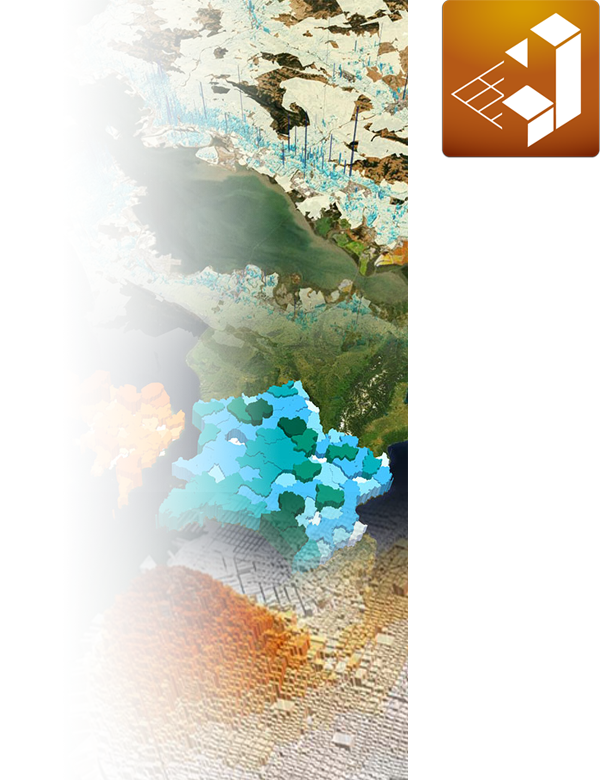

GeoCanvas documentation
Table of Contents
Contents
::
Overview
»
Table of Contents
¶
Contents:
Overview
Private Beta
Installation
System Requirements
Getting Started
Add Shapes
Add Attributes
Color Shapes
Visualize in 3D
Learn the Interface
3D View
Toolbar
Layer Panel
Legend Panel
Table Panel
Adding Shapes
From File
From Database
Adding Attributes
What are Attributes?
From File
From Database
Layer Controls
Current Layer
Visibility Toggle
Show / Hide Controls
Layer Up and Down
Opacity
Background Image
Outline Visibility
Delete Layer
Visibility Limit
Theme Controls
Theming
Fill
Extrusion
Known Issues
Mac

Contents
::
Overview
»